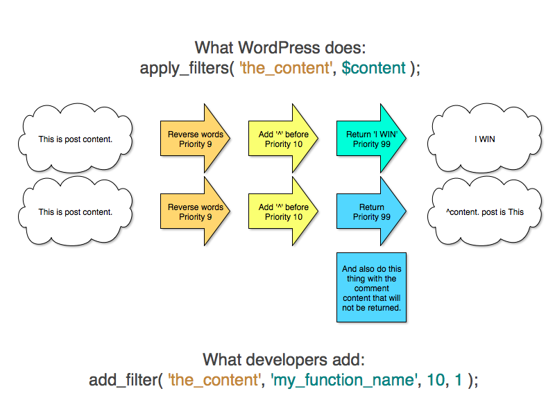
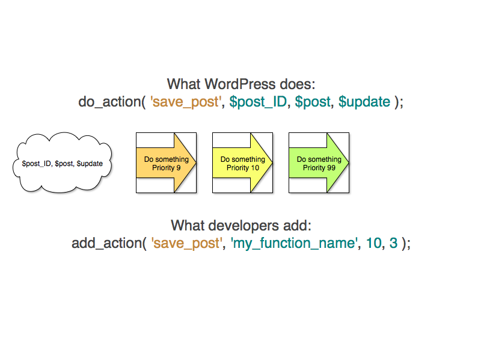

<?php
include './wp-load.php';
if ( function_exists( 'wp_insert_post' ) ) {
echo 'ok';
}

function the_content( $more_link_text = null, $strip_teaser = false) {
$content = get_the_content( $more_link_text, $strip_teaser );
/**
* Filter the post content.
*
* @since 0.71
*
* @param string $content Content of the current post.
*/
$content = apply_filters( 'the_content', $content );
$content = str_replace( ']]>', ']]>', $content );
echo $content;
}
function ee_cummings( $str ) {
return strtolower( $str );
}
add_filter( 'the_content', 'ee_cummings' );
function wp_insert_post( $postarr, $wp_error = false ) {
// Stuff happens
if ( 'attachment' === $post_type ) {
$data = apply_filters( 'wp_insert_attachment_data', $data, $postarr );
} else {
$data = apply_filters( 'wp_insert_post_data', $data, $postarr );
}
$data = wp_unslash( $data );
// More stuff happens
}
function ee_cummings( $data, $postarr ) {
$data['post_content'] = strtolower( $data['post_content'] );
return $data;
}
add_filter( 'wp_insert_post_data', 'ee_cummings', 10, 2 );
class Poetry {
static function ee_cummings( $data, $postarr ) {
$data['post_content'] = strtolower( $data['post_content'] );
return $data;
}
static function init() {
add_filter( 'wp_insert_post_data', array( __CLASS__, 'ee_cummings' ), 10, 2 );
}
}
Poetry::init();
// OR without init()
add_filter( 'wp_insert_post_data', array( 'Poetry', 'ee_cummings' ), 10, 2 );
class Poetry {
function __construct() {
add_filter( 'wp_insert_post_data', array( $this, 'ee_cummings' ), 10, 2 );
}
function ee_cummings( $data, $postarr ) {
$data['post_content'] = strtolower( $data['post_content'] );
return $data;
}
}
new Poetry;
// OR without __construct()
$poetry = new Poetry();
add_filter( 'wp_insert_post_data', array( $poetry, 'ee_cummings' ), 10, 2 );
Exercises
the_content.
$content = apply_filters( 'the_content', $content );
return apply_filters( 'get_comment_text', $comment->comment_content, $comment, $args );

function wp_insert_post( $postarr, $wp_error = false ) {
// Stuff happens
do_action( 'save_post', $post_ID, $post, $update );
// More stuff happens
}
function save_post_error_log( $post_id, $post, $update ) {
error_log( print_r( $post, true ) );
}
add_action( 'save_post', 'save_post_error_log', 10, 3 );
class Sandbox_Debug {
static function save_post( $post_id, $post, $update ) {
error_log( print_r( $post, true ) );
}
static function init() {
add_action( 'save_post', array( __CLASS__, 'save_post' ), 10, 3 );
}
}
Sandbox_Debug::init();
// OR without init()
add_action( 'save_post', array( 'Sandbox_Debug', 'save_post' ), 10, 3 );
class Sandbox_Debug {
function __construct() {
add_action( 'save_post', array( $this, 'save_post' ), 10, 3 );
}
function save_post( $post_id, $post, $update ) {
error_log( print_r( $post, true ) );
}
}
new Sandbox_Debug;
// OR without __construct()
$sandbox_debug = new Sandbox_Debug;
add_action( 'save_post', array( $sandbox_debug, 'save_post' ), 10, 3 );
Exercises
error_logs the post ID when a post is deleted.
do_action( 'deleted_post', $postid );
__return_false() and __return_true()has_filter()current_filter()remove_filter() and remove_all_filters()doing_filter()has_action()did_action()remove_action() and remove_all_actions()doing_action()grep -R keyword * | grep do_actiongrep -R keyword * | grep apply_filtersScripts
wp_enqueue_script()wp_dequeue_script()wp_register_script()Styles
wp_enqueue_style()wp_dequeue_style()wp_register_style()
add_action( 'wp_enqueue_scripts', 'my_register_styles' );
function sandbox_javascript() {
$nonce = wp_create_nonce( 'timeplease' );
?>
<script type="text/javascript">
jQuery( document ).ready( function( $ ) {
$( '#timeplease' ).click( function() {
$.ajax( {
type: 'post',
url: '<?php echo admin_url( 'admin-ajax.php' ); ?>',
data: {
action: 'find_time',
_ajax_nonce: '<?php echo $nonce; ?>'
}
} ).done( function( response, textStatus, jqXHR ) {
$( '#timethanks' ).text( response.data.time );
} );
} );
} );
</script>
<?php
}
add_action( 'wp_footer', 'sandbox_javascript' );
<span id="timeplease">Time, please?</span>
<span id="timethanks">Time should go here</span>
function my_get_the_time() {
// Check nonce!
check_ajax_referer( 'timeplease' );
$time = time();
// Using echo json_encode(); die(); is deprecated.
if ( $time ) {
wp_send_json_success( array( 'time' => $time ) );
} else {
wp_send_json_error();
}
}
add_action( 'wp_ajax_find_time', 'my_get_the_time' );
Time to make some stuff.